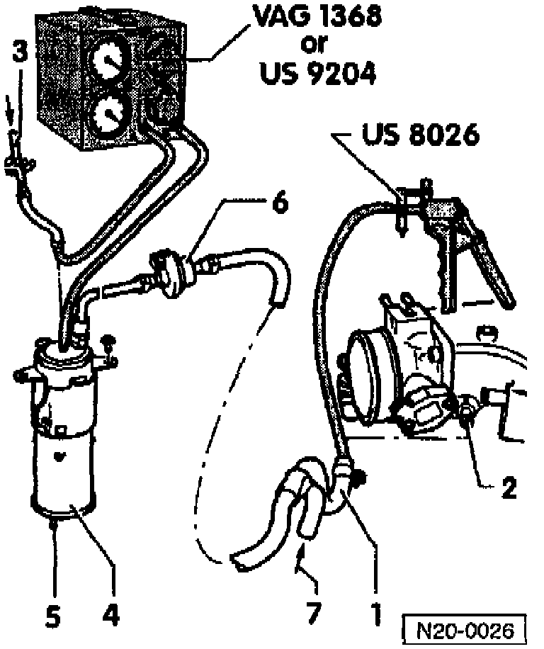
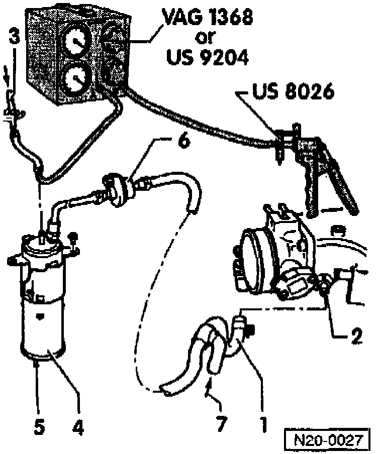

Evaporative Emission Control Canister: Testing and Inspection
TOOLS REQUIRED:^ Hand vacuum pump US 8026.
^ Vacuum tester VAG 1368 or US 9204.
TEST CONDITIONS:
^ Ignition switched OFF.
PROCEDURE:
- Remove Air Cleaner (ACL).

- Disconnect vent hose -1- from throttle valve housing -2-.
- On vehicles with Postitive Crankcase Ventilation (PCV) breather valve, seal connection -7-.
- Connect hand vacuum pump US 8026 to hose -1-.
- Disconnect vent hose -3- from Evaporative Emission (EVAP) Canister -4- and connect to connection -A- of vacuum tester VAG 1368 or US 9204.
- Connect vacuum tester VAG 1368 or US 9204 connection -B- to Evaporative Emission Canister.
- Set vacuum tester to position -B-.
- Operate hand vacuum pump US 8026 several times.
NOTE: Vacuum must not build up.
- If vacuum builds up:
- Check breather connection -5- on EVAP Canister for soiling. Clean if necessary.
- Check EVAP Canister Purge Regulator Valve (N80) -6- for continuity and replace as necessary.
- If vacuum does not build up:
- Remove fuel filler cap.

- Connect hand vacuum pump US 8026 to vacuum tester VAG 1368 or US 9204 -connection B-.
- Set vacuum tester to -A/B- position.
- Operate hand vacuum pump US 8026 several times.
NOTE: Vacuum must not build up.
- If vacuum builds up:
- Check gravity valve.
- Check vent pipe -3- (from fuel tank) for blockage.
- If vacuum does not build up:
- Re-install fuel filler cap.
- Operate hand vacuum pump US 8026 several times.
NOTE:
- Vacuum must not build up.
- If the fuel level The the tank is low, the vacuum pump must be operated at least 20 to 30 times.
- If vacuum builds up:
- Replace fuel filler cap.